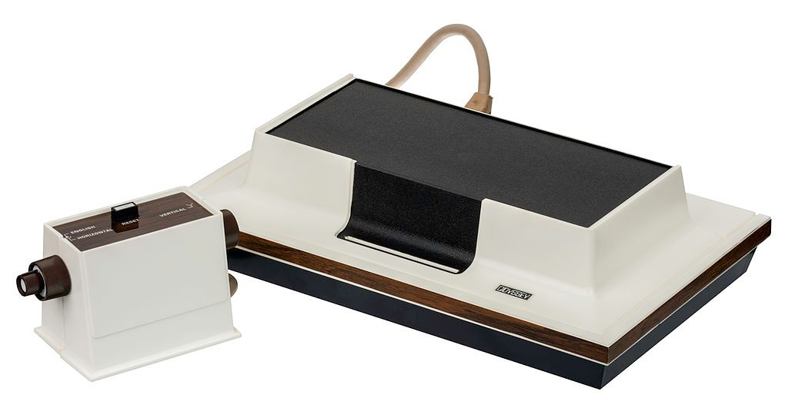
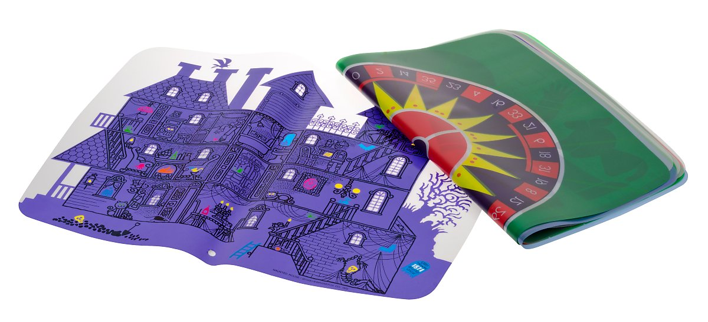
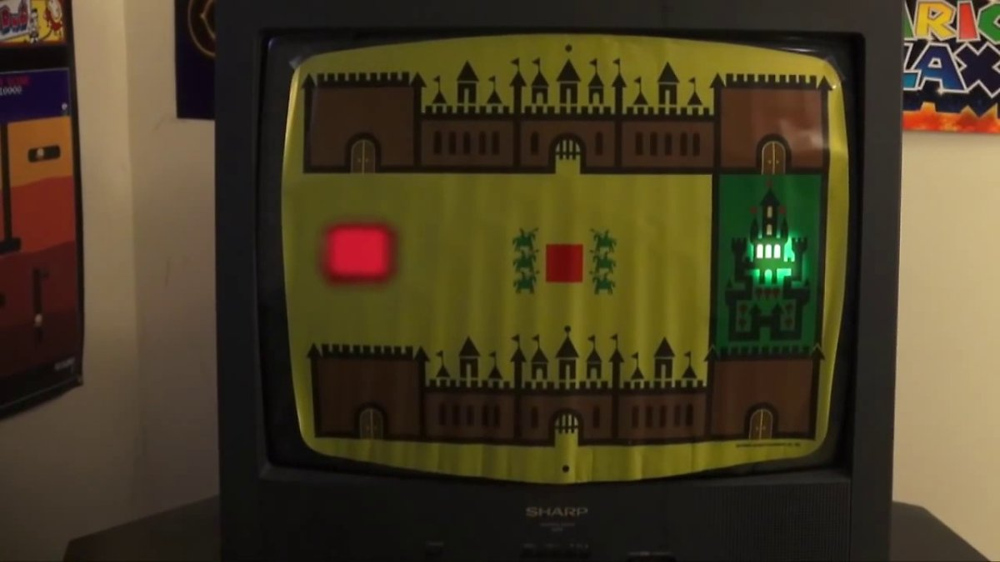
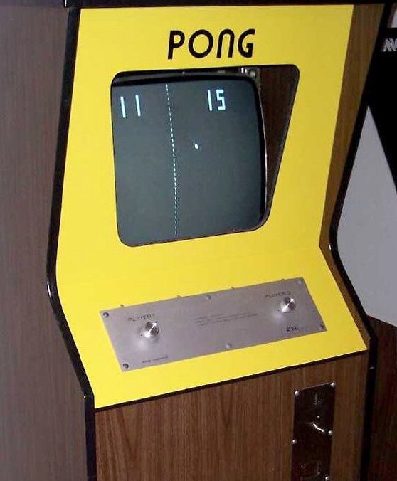
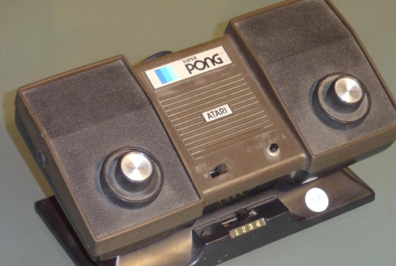
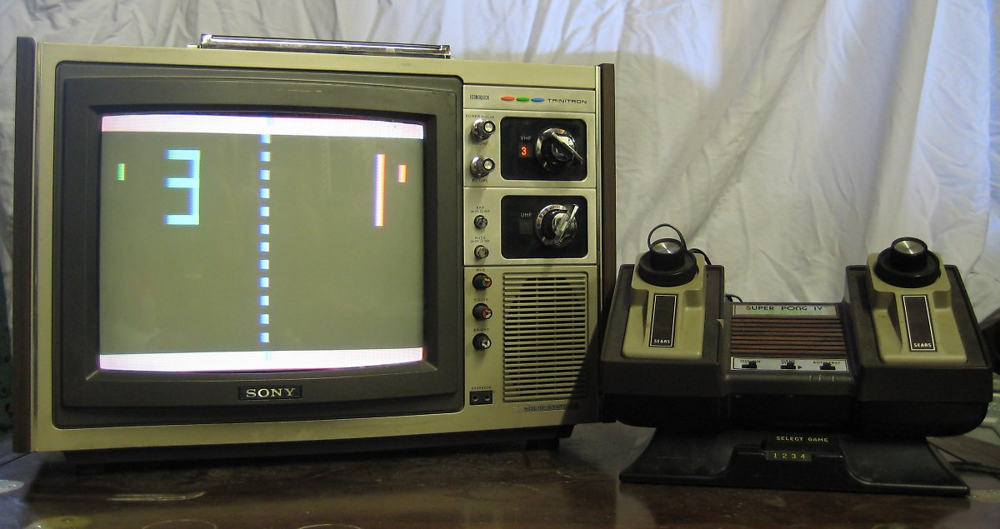
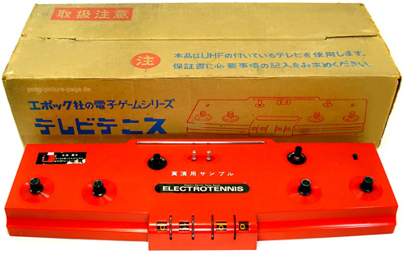
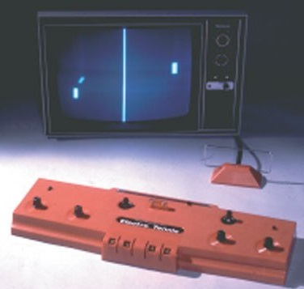

Evolution of Console








마그나 복스 오디세이
_ 1972
셀로판지를 붙여서 게임판을 만들고 화면의 점을 움직이는 방식의
보드게임에 가까운 게임기
게임의 룰이 될 보드게임을 제공했고 이를 화면에 표시해서 플레이하는
방식
아타리 _ 퐁
_ 1972
마그나 복스 오디세이에 들어있는 게임 중 Table Tennis라는 게임이 있는데
이 게임에서 얻은 아이디어를 바탕으로 만든 게임
상업적으로 성공한 첫 번째, 아케이드 게임기
처음엔 펍과 같은 술집에서 시작했고 큰 인기를 끌었다. 그 인기를
바탕으로 가정용으로도 출시되었다.
에폭 _ 텔레비젼 테니스
_ 1975
일본 완구 회사, 에폭에서 만든 일본 최초의 가정용 게임기
게임기를 TV에 연결하는 테니스 게임기